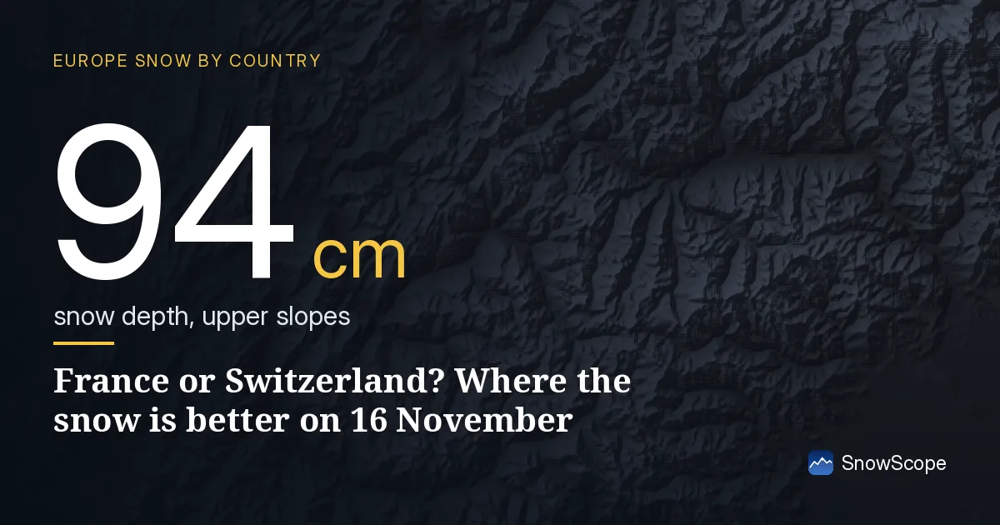

France or Switzerland? Where the snow is better on 16 November
11 % of the mapped high ground is white in France, against 53 % in Switzerland. The deepest resort in France has 20 cm; in Switzerland it is Ovronnaz with 136 cm.
See the live snow forecast for Les Arcs in the SnowScope appSnow depth, powder alerts and the 3D map, free.
Across the border
For a trip near the border this decides the direction: the snow is not where the map of borders would suggest, it is where the last storm went.
9,450 km² of snow-covered ground in France this Monday, 570 km² lost since yesterday. That is 11 % of the high ground we map in France.
| Country | White | Deepest resort | Next 7 days |
|---|---|---|---|
| France | 11 % | Les Arcs | 105 cm |
| Switzerland | 53 % | Ovronnaz | 112 cm |
| Italy | 23 % | Monterosa Ski | 75 cm |

The neighbours today
For comparison, the neighbours on the same day: Switzerland: 53 % white, deepest Ovronnaz with 136 cm, up to 112 cm in the week ahead; Italy: 23 % white, deepest Monterosa Ski with 99 cm, up to 75 cm in the week ahead.

Best resorts right now
Les Arcs leads with 94 cm on its upper slopes.
Next on the list: La Plagne (84 cm), Les Grands Montets (81 cm), La Grave (74 cm) and La Rosière (73 cm).
Les Arcs picked up 29 cm in the last three days and could add 87 cm by Thursday 19 November.
At La Plagne: 26 cm of fresh snow over three days, 79 cm more expected by Thursday 19 November.
103 of the 224 resorts we follow in France have snow on their upper slopes.
The rest of the shortlist: Les Grands Montets: 81 cm on top, 29 cm in three days, 89 cm expected; La Grave: 74 cm on top, 41 cm in three days, 90 cm expected; La Rosière: 73 cm on top, 25 cm in three days, 86 cm expected.
The next days
Expect up to 65 cm on the snowiest slopes by the third day; the seven-day total reaches 105 cm.
The snowiest day looks like Friday 20 November, with up to 33 cm in the snowiest spots.
Further out, days 8 to 14 show up to 44 cm on the snowiest slopes.
Snow depth by height
Average depth of the snowpack by height band: 1,000-1,500 m: on average under 1 cm (1 % of the ground white); 1,500-2,000 m: on average 1 cm (33 % of the ground white); 2,000-2,500 m: on average 6 cm (72 % of the ground white); above 2,500 m: on average 25 cm (94 % white).
Snow cover today
Think 1,900 m and higher for a white landscape. Last week's 8,000 km² has grown by 1,450 km².
New snow in the last three days
The Mont Blanc massif, the southern French Alps and the northern French Alps got the most fresh snow over three days, up to 29 cm.
In the past day, up to 12 cm was added.
About 8,980 km² received at least 5 cm.
How this start compares
Resort by resort, today against a normal 16 November: Les Arcs: 20 cm at about 2,214 m, against 27 cm in a normal year; La Plagne: 16 cm at about 2,138 m, against 32 cm in a normal year; Les Grands Montets: 22 cm at about 2,001 m, against 21 cm in a normal year; La Grave: 53 cm at about 3,370 m, against 72 cm in a normal year.
1 of these 4 resorts are above their usual depth for the date.
These depths are for one height on each mountain, below the top, so they read lower than the upper-slope numbers further down.
In past winters the best snow at Les Arcs usually came early March / mid-March.
Planning a day on the snow
Above 2,500 m the ground is almost fully white (94 % covered), so runs up there have a continuous base.
Between 1,500 m and 2,500 m the cover is patchy, about 33 % white: expect grass and stones between the snow.
Below 1,500 m the slopes are still almost bare.
If you can choose the day, go after Friday 20 November: the fresh snow then has time to settle and the roads to be cleared.
What it means on the slopes
The new snow freshens the upper slopes; lower down it may already be heavy or wet.
With more snow in the forecast, the next days should improve things further.
Tips for skiers
- Read the local avalanche bulletin before going off-piste.
- Fresh snow on a cold base sticks badly: take care on steep slopes.
- Early-season snow is thin over rocks: ski the groomed runs first.
About these numbers
Resort snow depths are the deepest snow on the resort's upper slopes from the SnowScope snow model (about 1 km, run of 16 November); they are estimates for an area, not a measurement at one point. Station values are measurements on the date shown. Forecasts can change. Always read the official avalanche bulletin before going off-piste.
Cite this report
For research, teaching or the press: the numbers and charts are free to reuse under CC BY 4.0 with this citation.
SnowScope (2026), France or Switzerland? Where the snow is better on 16 November, https://snowscope.app/blog/en/2026/11/france-snow-report-16-november-2026.html, accessed 2026-11-16
SnowScope (Atlas Labs). (2026, November 16). France or Switzerland? Where the snow is better on 16 November. SnowScope snow reports. https://snowscope.app/blog/en/2026/11/france-snow-report-16-november-2026.html
BibTeX
@misc{snowscope2026francesnowreport16novemb,
author = {{SnowScope (Atlas Labs)}},
title = {France or Switzerland? Where the snow is better on 16 November},
year = {2026},
month = nov,
howpublished = {\url{https://snowscope.app/blog/en/2026/11/france-snow-report-16-november-2026.html}},
note = {Published 2026-11-16 20:42 UTC; accessed 2026-11-16}
}· CC BY 4.0 · Methods, data and tools →
Les Arcs: snow and temperature by height, this winter vs last (tools) →
Follow Les Arcs
Free: a message when fresh snow is coming, and the forecast every morning.
More snow reports

Les Grands Montets saw 74 cm of new snow in the last 72 hours, with more forecast for the coming days, according to our model on November 17, 2026.

La Grave leads the Alps with 52 cm forecast in 24 hours as of 11 November; early snow arrives weeks before peak accumulation.

La Grave's snowpack grew 17 cm in a week to 43 cm on 14 November, now forecast to gain 61 cm over the next 72 hours as a system moves across the Alps.